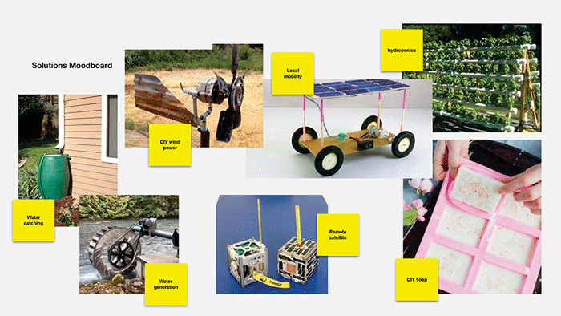
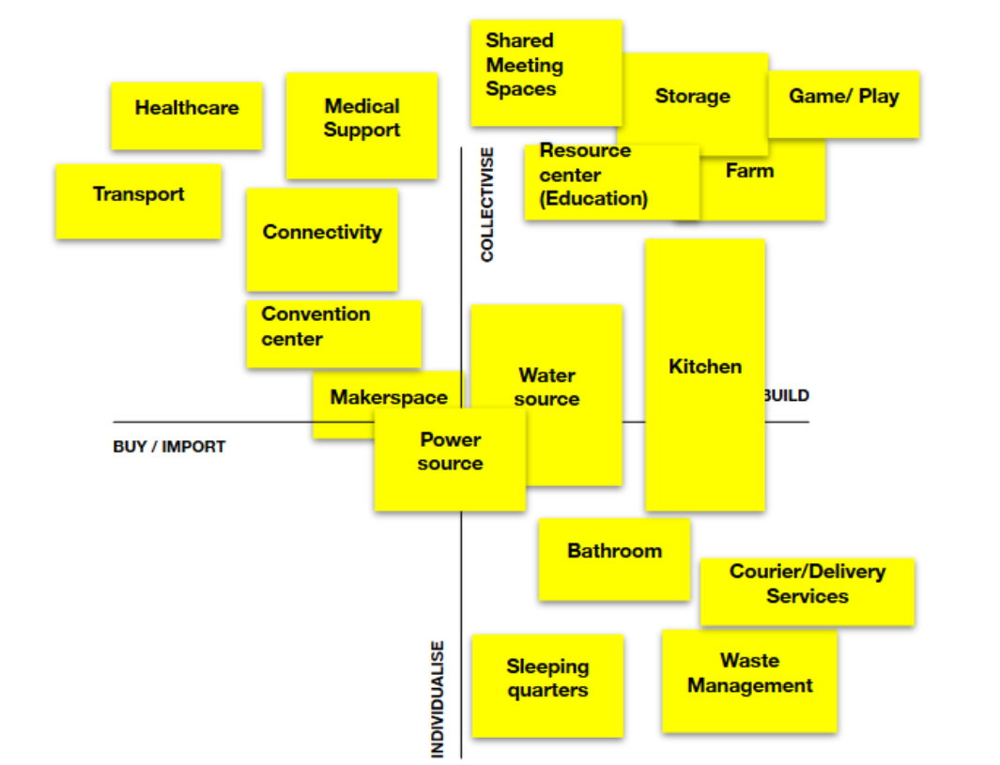
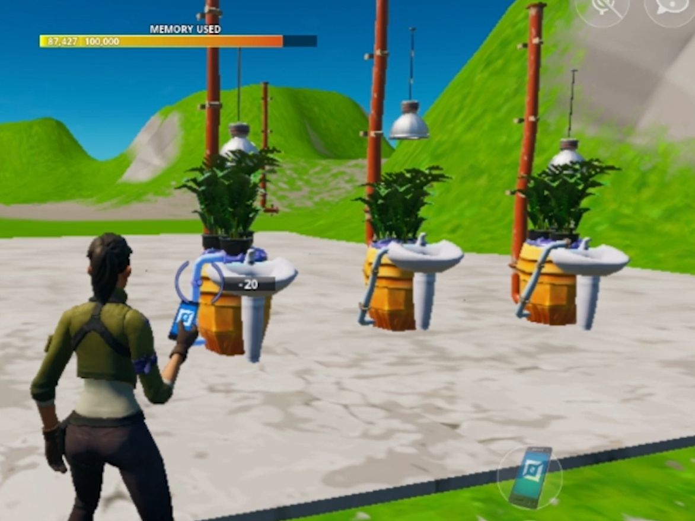
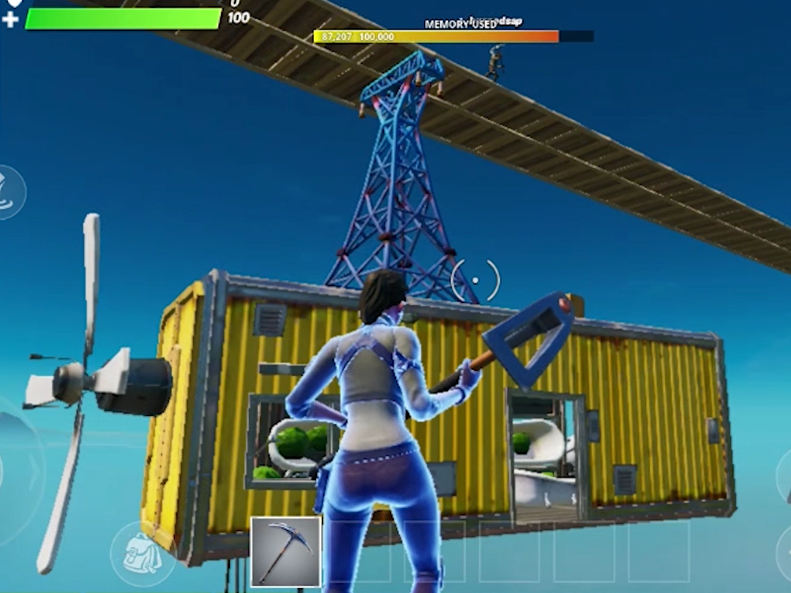
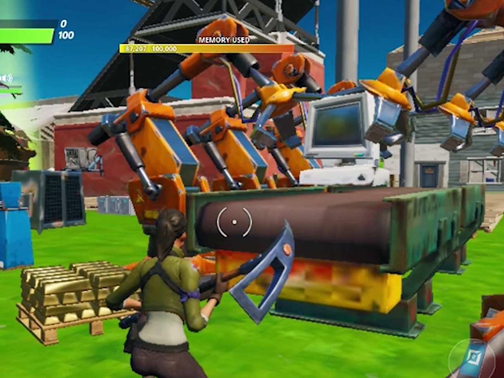
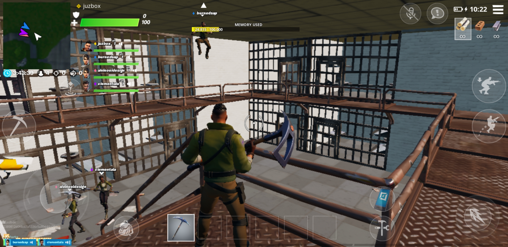
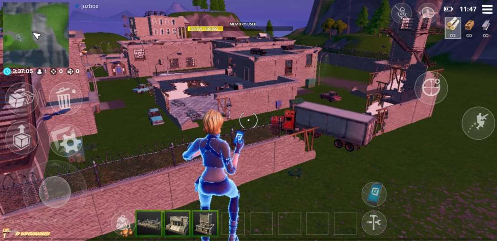

Independent Project | Community building + Cocreation
🛠️
Shape the built environment with others
🌿
Collectively discover the nuances of sustainable lifestyles
🧩
Learn to coordinate and delegate according to a shared vision
Flirting with autonomy
Digital Bunkers was a series of speculative sessions hosted online on the future of quarantining and semi-autonomous living. Through discussions and co-creative sessions, participants from around the world reimagined their homes and the infrastructural systems they depended on daily.
The sessions are run in several different formats with their core structure consisting of group discussions and cocreative sessions using online gaming platforms like Fortnite. Each session was held over a 2 day period, 5-7 participants at a time.
Through the exercises the participants explored what an autonomous lifestyle might require and ask important questions on the mutualization, automation and outsourcing of services they depend on daily and that we've learned to recognize as essential during the Covid pandemic.

At the heart of the project is the hope to better understand how each participant's lifestyle could become less dependent on the current system.
DB001 | A day in the life
The first iteration of Digital Bunkers focused on understanding the various dependencies behind our daily life. It asked: "How many services that your lifestyle depends on exist outside your home (and responsibility)?" Connectivity, medication, electricity, clean water... The list is long.
Using a journey mapping exercise each participant tried to list our their daily dependencies and explore what alternatives might provide them a little more autonomy. Then they were given the option to opt, or not, for these new found solutions once they built their homes.
Each household was built seprately in the same Fortnite map. At teh end, the participants shared their respective designs and set ups.
How can our homes be made more resilient to the crises to come?
DB002 | The communal tower
The second Digital Bunkers session was hosted by Salil Parekh, a designer in Delhi. He decided to frame the activity around a vertical community as a way of challenging the participants to communicate and build on each other’s contributions. Each floor of the community tower was dedicated to a different activity and the housing was disseminated throughout the tower.
This session tried to place participants in a situation of collectivization and collaboration. Instead of having each person design their home, each participant took ownership of a specific service: education, healthcare, food production and supply and coordinated to ensure a smooth construction effort.
Using the tower required participants to communicate because otherwise one person might break through the other's space.

DB003 | Semi-autonomous community
The third edition of Digital Bunkers (and final opus to the initial saga), was framed around the idea of co-living and how different infrastructural needs could be centralized or decentralized.
Building on the DB002 session where we had explored the distribution of key roles across a tower, DB003 focused more on the development of “productive” spaces than living spaces. Each participant had to take on a key needs of the community identified in the previous discussion (fabrication, healthcare, education, waste management), and explore different ways of providing those services either in a centralized (one location) or decentralized (at home solution, or scattered around the neighborhood). This was a personal decision made by each person but informed by feedback and suggestions from other participants as well.
Another addition to the format was collaboration. Participants had to coordinate to create shared infrastructures and understand each others’ needs like the pipe that links the healthcare center to the waste management system to dispose of hazardous materials, or the self-driving shuttle people can grab essentials from as it slowly drives by their doorstep.
Below are three other examples of the creations invented during the session: an in-home phytoremediation system, an airborne shared refrigeration unit that circles around the community, a fully automated disassembly unit.
An 11min video in which the creators explain the community they created.
The "health portal" was a simple contraption that suggested the community should have fever-checking portals that then text you your fever and leave it to you to decide what to do.



Pune2050
The Digital Bunkers approach was later adapted for a course at L'École de design Nantes Atlantique. During the workshop, the students were tasked with using this approach paired with a few speculative exercises to imagine what the city of Pune might look like and be like to live in by 2050.
Full presentation of the projects by the students.
Fortnite's Prison Visit
Following the murder of George Floyd and the emergence of discussions on defunding the police, I wondered how massive online platforms and aspiring metaverses like Fortnite depicted prisons and those expected to live in them. With the help of a few other friends, we visited and reflected on the prison asset in Fortnite. The paper was never published or completed but represents work I'd love to be able to take forward later.

Fortnite cells in a panopticon-like setup, the living conditions in them seem very poor.

The whole prison asset told the story or an escape, and perhaps also a sort of mutiny judging by the destruction around the space.